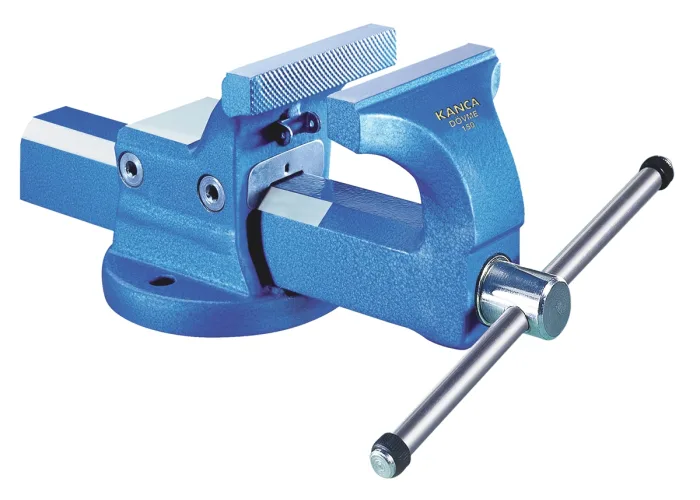
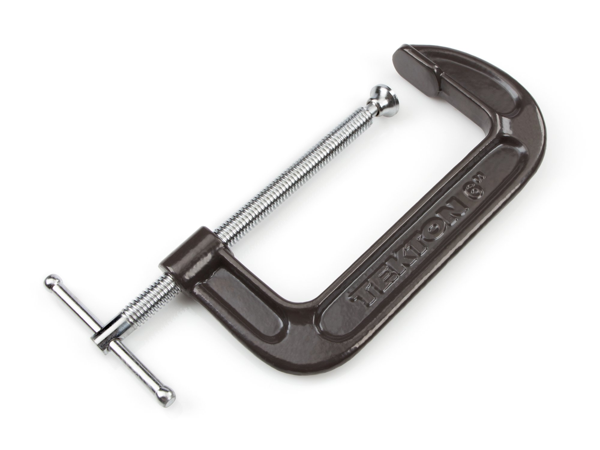
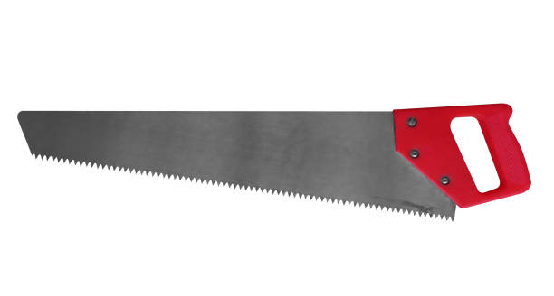
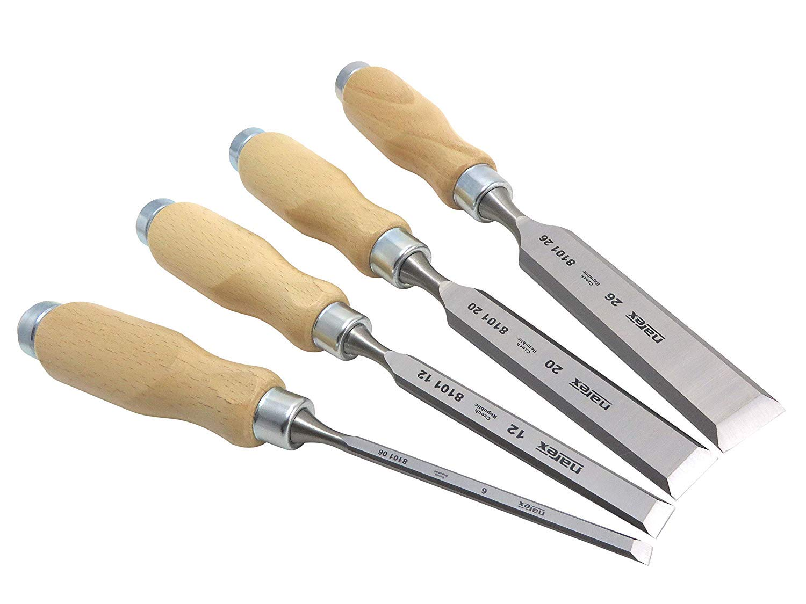

The bench vice is a work holding device. It is fixed to the bench with bolts and nuts. The vice body consists of two main parts, fixed jaw and movable jaw. When the vice handle is turned in a clockwise direction, the sliding jaw forces the work against the fixed jaw.
This is used to hold work against an angle plate or v‐block or any other surface, when gripping is require Its fixed jaw is shaped like English alphabet ‘C’ and the movable jaw is round in shape and directly fitted to the threaded screw at the end .The working principle of this clamp is the same as that of the bench vice.
The Hack Saw is used for cutting metal by hand. It consists of a frame, which holds a thin blade, firmly in position. Hacksaw blade is specified by the number of teeth for centimeter. Hacksaw blades have a number of teeth ranging from 5 to 15 per centimeter (cm).
Chisels are used for removing surplus metal or for cutting thin sheets. These tools are made from 0.9% to 1.0% carbon steel of octagonal or hexagonal section. Chisels are annealed, hardened and tempered to produce a tough shank and hard cutting edge.
